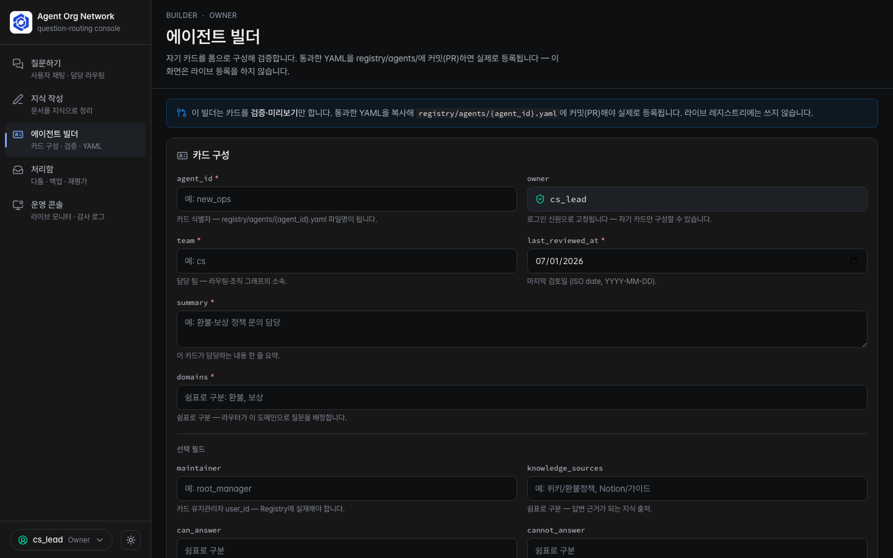
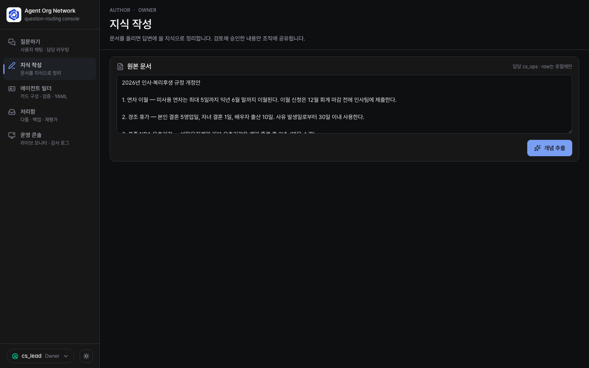
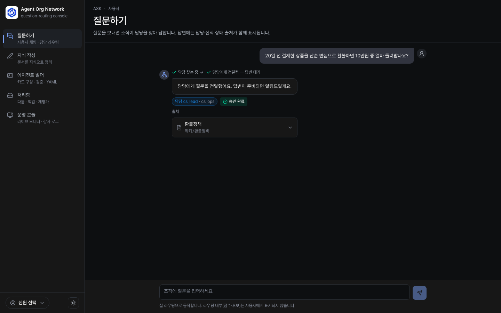
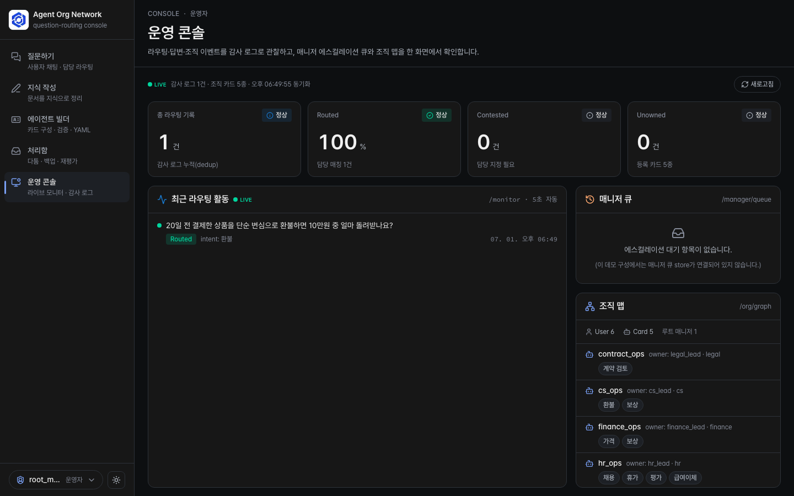

조직 구성원이 자기 업무 에이전트를 만들어 자기 지식으로 답하게 하고,
중앙이 담당·권한·판례로 질문을 연결하는 협업형 AI 조직.
중앙 AI가 모든 걸 아는 구조가 아니다. 중앙은 연결자다 — "누가 무엇을 담당하는가"와
그 연결·기록만 안다. 답은 담당자(owner)의 Claude가 자기 OKF 지식 번들을 읽어서 한다.
모르면 지어내지 않고 사람(Manager)에게 넘긴다. 다툼은 사람이 합의하고, 그 합의가 판례로 쌓여
라우터가 학습한다.
등장 — 데모 조직과 네 페르소나
◆실 사용자
채팅(웹)·또는 자기 MCP 클라이언트에서 묻고 답받는다. 내부는 숨김 — 담당·승인·출처만 본다.
●개인 Owner
에이전트(카드)를 세우고(에이전트 빌더), 그 에이전트에 지식(OKF)을 주입하고, 자기에게 온 후보 합의·재검토·부재 중 백업 답을 검토한다(처리함).
1미아 없음 — 어떤 질문도 담당 없이 버려지지 않는다. 0매칭이면 반드시 사람(Manager)에게 종착.
2등록 무결성 — 유효하지 않은 카드는 등록되지 않는다(admission).
3Authority 중앙 — 권한·관할은 중앙 규칙만 선언한다. 카드가 자기 권한을 단정하지 않는다(under-claim만).
4전이 ≠ 기록 — 상태 전이(도메인)와 감사 기록(로그)은 다른 것.
5답엔 담당·신뢰가 붙는다 — 사용자에게 가는 답엔 항상 담당·신뢰 상태(full/draft_only/backup)·출처가 붙는다.
1
업무 에이전트를 등록한다
●Owner불변식 ②③
담당 영역을 선언한 카드를 코드 밖 YAML로 등록한다. Owner는 에이전트 빌더(디자인 시스템 UI)에서
카드를 폼으로 구성·검증한 뒤, 미리보기된 YAML을 git/PR로 커밋한다 — 라이브 레지스트리 쓰기는 없다.

실제 화면에이전트 빌더 — agent_id·owner(로그인 신원 cs_lead로 고정)·team·domains를 폼으로 채우고, 상단 배너가 "검증·미리보기만 하고 통과한 YAML을 registry/agents/{agent_id}.yaml에 커밋(PR)하라"고 안내한다. 선택 필드로 maintainer·knowledge_sources·can/cannot_answer.
① 행동 — 에이전트 빌더(/builder)에서 카드 폼 구성·검증
POST /builder/validate {"agent_id":"cs_ops","team":"cs","domains":["환불","보상"], …}# 통과 → {ok:true, yaml} 미리보기 · 실패 → {ok:false, errors} · 세션≠owner → 403(자기 카드만)
② 행동 — 전체 레지스트리 참조 무결성 검증(CLI)
uv run python -m agent_org_network.registry registry
결과
→ 에이전트 빌더(Next.js·라이트/다크)가 카드 필드 폼 → admission 검증 →
YAML 미리보기(복사) → "registry/agents/{agent_id}.yaml에 커밋(PR)" 3단 안내. 라이브 등록이 아니라 git/PR이 편집 채널. → CLI는 contract_ops·cs_ops·finance_ops·hr_ops·it_ops 5장의 owner/manager 참조 무결성 검증 통과.
증명 — 카드는 코드 밖 데이터다. 5장을 YAML 추가만으로 등록. 미등록 owner를 단 카드는
⚠거부된다(불변식 ②). 카드는 담당 영역(domains)만 under-claim으로 선언하고
권한은 declare하지 않는다(불변식 ③).
2
OKF 저작 — owner가 지식을 만든다
●Owner불변식 ③ · 중앙 토큰 0
카드로 담당을 선언했으면, 이제 그 담당 지식(OKF)을 만든다. owner가 문서를 올리면 실
LLM(claude-sonnet-5)이 개념(Concept·core_question)으로 추출하고, owner가 검토·승인하면
owner-로컬 git에 커밋되고 목차(KnowledgeIndex)만 중앙에 publish된다 — 본문은 중앙에 가지 않는다(ADR 0029·0030).

실제 화면지식 작성 — owner가 원본 문서(2026 인사·복리후생 규정: 연차 이월·경조 휴가·표준 NDA)를 붙여넣고 "개념 추출"을 누르면 실 LLM이 개념으로 나눈다. 카드 우상단에 담당 cs_ops · raw는 로컬에만 — 원문은 중앙에 올라가지 않음을 화면이 명시한다.
① 행동 — raw 문서 → staged 개념 추출(실 LlmAuthor)
POST /author/run {"agent_id":"cs_ops","document":"…교환 정책 원문…"}# 카드 권한 domain을 split 힌트로 주입 — LLM이 core_question·domain으로 추출
증명 — 지식을 owner가 만든다(실 LLM 추출·입력 기반·고정 아님). 권한 밖 domain은
중앙이 강제로 떨군다(불변식 ③ — 카드가 자기 권한을 못 넓힌다). 중앙은 raw·본문·모델 토큰 0,
목차만 보관한다(중앙 토큰 0).
3
단일 담당 — owner가 자기 지식으로 진짜 답한다
◆실 사용자불변식 ⑤
"환불" 질문 → ✓Routed(cs_ops).
담당 owner의 답변 런타임이 okf/cs_ops/ 번들을 읽어 계산한다. 벡터DB·RAG 없이 — cwd의 마크다운을 직접 읽는다.

실제 화면질문하기 — 사용자가 "20일 전 결제한 상품을 단순 변심으로 환불하면 10만원 중 얼마…"라 묻자, 답변 흐름 배지(담당 찾는 중 → 담당에게 전달됨 — 답변 대기)가 뜨고 담당 cs_lead · cs_ops · 승인 완료와 출처(환불정책)가 함께 표시된다. 라우팅 내부값(점수·후보)은 사용자에게 숨겨진다.
행동 — 실 답변(런타임은 owner가 고른다)
curl -X POST :8099/ask -d '{"question":"20일 전 결제한 상품을 단순
변심으로 환불하면 10만원 중 얼마 돌려받나요?"}'
런타임 — 두 가지, 둘 다 중앙 API 키·토큰 0
기본ClaudeCodeRuntime — owner 로컬 claude CLI가 OKF 번들을 읽어 답한다. 토글AON_PROVIDER=claude-api이면 ClaudeApiRuntime — owner OAuth 인프로세스
anthropic SDK(claude-sonnet-5)로 교체(select_runtime). 어느 쪽이든 중앙 키 주입 0.
결과 — okf/cs_ops/refund-policy.md 를 읽고 계산
"최종 환불액: 45,000원" 근거: 20일 → 8~30일 구간 50% = 50,000원 → 단순 변심 10% 수수료 차감 → 45,000원. answered_by: cs_lead/cs_ops · mode: full · sources: 위키/환불정책
증명 — "owner가 자기 지식으로 답한다"의 실체. 답은 중앙이 아니라
cs_ops가 자기 OKF 번들을 읽어 만든다(환각이 아니라 정책 계산). 런타임(CLI·in-process SDK)이 달라도
owner 경계·중앙 토큰 0은 같다. 답엔 담당·신뢰(full)·출처가 붙는다(불변식 ⑤).
4
중앙은 무지식 — 모르면 지어내지 않는다
◆실 사용자
대조 실험 — 번들이 없는 담당(finance_ops, okf/finance_ops/ 부재)에게 물으면?
행동
curl -X POST :8099/ask -d '{"question":"연간 결제하면 가격 할인 얼마나 되나요?"}'
결과
"근거로 삼을 가격표·할인규정 문서가 없어 정확히 답변드릴 수 없습니다.
추정해서 알려드리면 잘못된 견적 기준이 될 수 있어, 임의 수치는 안내하지 않겠습니다."
증명 — 같은 시스템·같은 런타임인데 cs_ops는 45,000원, finance_ops는 "모른다".
차이는 오직 owner OKF 번들의 유무다. 중앙은 지식을 소유하지 않고, "모르면 안전하게 넘긴다"는 원칙이 살아 있다.
→Answer 축(subject_kind=answer) — 옛 SHA(answer.snapshot_sha)로
답한 routed 답이 "재검토" 대상으로. →Precedent 축(subject_ref=보상) — 그 agent를 primary로 둔 과거 판례가
"재검토" 대상으로.
각 항목은 실제 owner_id(예: cs_lead)로 귀속돼 그 owner 처리함에 뜬다(reeval_flagged 통지 1회).
증명 — 지식 변경이 과거를 무효화하지 않고 "재검토" 신호로 남긴다(놓침 0·과검출 허용).
발화는 중앙 수용 시점(전이), 적재는 처리함(기록) — 전이 ≠ 기록(불변식 ④).
9
미아(Gap) — 담당 공백은 Manager 큐로 종착
◆실 사용자불변식 ①
어느 카드의 domains에도 없는 주제(주차·복지·시설…) → ⚠Unowned.
행동
curl -X POST :8099/ask -d '{"question":"주차장 정기권은 어떻게 갱신해요?"}'
증명 — 미아 없음(불변식 ①)의 최종 종착. 담당이 없어도 질문은 버려지지 않고 반드시
누군가의(여기선 root) 큐에 닿는다.
10
Manager 큐 — 세 escalation이 한 곳으로 수렴, 사람이 처분
▲Manager불변식 ①④
미아(Unowned)·합의 교착(Deadlocked)·owner 부재(EscalatedToManager) 세 출처가
하나의 ManagerItem으로 수렴한다(ADR 0014). Manager가 1인칭으로 처분한다.
행동 — Manager가 자기 큐 조회 → 담당 지정 (세션 로그인 후)
# root_manager 로그인 → GET /manager/queue → 항목 처분curl -X POST :8099/manager/items/<item_id>/act -d '{"type":"assign_owner","primary":"cs_ops"}'
결과 — 세 행위
AssignOwner → 담당 지정 + Precedent 학습(교착이면 그 ConflictCase도 종결) ·
Reroute → 재지정(Transfer, 판례 X) · Dismiss → 종결.
→ 처분되면 큐에서 사라진다.
증명 — 미아·합의실패·부재가 흩어지지 않고 한 큐로 모여(미아 없음의 마지막 칸) 사람이 닫는다.
escalation은 audit에 이미 남으므로 큐는 전이만 담는다(전이 ≠ 기록, 불변식 ④). 권한은 owner가 아니라
그 위 manager에게 귀속.
11
분산 전송 — 답은 각 owner PC에서, 역방향 연결로
◆실 사용자●Owner
owner PC는 서버를 노출하지 않는다(NAT 뒤·상시가동 X). owner PC의 워커가 중앙에
아웃바운드 WebSocket으로 붙어 작업을 가져가 로컬로 답한다(ADR 0011).
행동 — 중앙 + owner 워커 기동, 사용자는 비동기로 답 회수
scripts/run_central.sh 8000 # web /ask + 워커 ws /worker (한 dispatcher)scripts/run_worker.sh cs_lead ws://127.0.0.1:8000/worker primary
# 사용자: POST /ask →Pending(dispatched, tracking)# 잠시 후: GET /ask/<tracking> →Answered (워커가 회신한 실 답)
결과
→ 논리적 호출(중앙→owner)과 물리적 연결(소켓 owner→중앙)이 분리.
중앙은 owner별 작업 큐에 적재하고 워커가 끊겨도 작업은 대기·재push(끊김·재연결·중복 전달이 본체).
사용자엔 불투명 추적 토큰 1개만 노출(내부 구조 미노출).
증명 — 답변 주체가 진짜 그 owner 환경이 된다(각 워커가 자기 OKF 번들만 cwd).
미회신·timeout은 ⋯Pending으로 표면화하지 동기 답으로 위장하지 않는다.
12
크로스머신 fan-out — 저작이 실 소켓으로 전파돼 라우팅에 반영
●Owner불변식 ① · 발화 머신별 단일 · 중앙 토큰 0
owner가 자기 PC에서 저작·커밋하면 그 목차가 실 WebSocket으로 중앙에 전파돼 라우팅에 즉시 반영된다
(AON_ROUTER=index·TwoStageRouter가 published 목차 토큰 매칭). owner PC와 중앙은
별도 프로세스·실 소켓이다(ADR 0028·0030).
primary 부재 → backup이 답(mode: backup 강제 하향, answered_by=owner) →
둘 다 부재면 Manager escalation(미아 없음). owner 복귀 시 처리함 백업 검토 탭에 미검토 답이 쌓이고,
승인/정정/무시로 1인칭 처분한다.
curl -X POST :8099/backup-reviews/<item_id> -d '{"type":"approve"}'# approve/correct → mode backup→full 신뢰 복원 · dismiss → 검토 완료
증명 — 자리를 비워도 자동으로 잇되 여전히 owner가 답한다. 백업 답은 미검토라 신뢰가
하향돼 표시되고(불변식 ⑤), owner가 복귀해 검토함으로써 책임이 명목에서 실질로 바뀐다. 너무 오래된(stale)
위임이면 백업은 거부→escalation("모르면 넘긴다").
14
페르소나 인증 — 분리된 공간, 자기 것만
●Owner■운영자ADR 0009·0016
실 사용자(채팅)는 익명. 운영 면(처리함·큐·모니터링·그래프·에이전트 빌더)은 세션 인증으로 분리되고,
신원은 path/body가 아니라 세션에서 와 가장이 불가능하다.
행동 — 인증 ON으로 기동 후 스코프 확인
OPERATOR_SESSION_SECRET=$(openssl rand -hex 32) uv run uvicorn agent_org_network.web:app --port 8099
GET /inbox/cases →401# 미로그인GET /inbox/cs_lead →404# 가장 경로 자체가 미등록POST /login {"user_id":"cs_lead"} → 200, GET /inbox/cases →200# 자기 처리함POST /login {"user_id":"attacker"} →401# Registry 실재 user만
결과
→ 한 세션은 신원 1개로 고정(per-request 가장 불가). Owner는 자기 처리함만,
남의 것 처분 시 403. 채팅(/ask)은 인증 ON/OFF 양쪽에서 익명 유지.
증명 — 페르소나별 면은 분리된 별개 공간이다(ADR 0009). 인증이 접근 주체를 가르되 라우팅·답 도메인은
건드리지 않는다. 무비밀번호 세션은 v0 최소(SSO·자격증명은 후속).
15
운영 모니터링 — 모든 Q&A의 절차·답을 추적
■운영자불변식 ④
append-only 감사 로그를 순수 읽기로 투영. 운영 면이라 내부값(confidence·candidates·escalation 대상)까지 본다 —
채팅의 노출 불변식과 정반대.

실제 화면운영 콘솔 — 상단 메트릭 카드(총 1 · Routed 100% · Contested 0 · Unowned 0)로 라우팅 건전성을 한눈에 본다. 최근 라우팅 활동에 환불 질문이 Routed · intent 환불로 남고, 매니저 큐와 조직 맵(User 6 · Card 5)이 한 화면에 붙는다.
행동 (운영자 로그인 후)
GET /monitor # 모든 질문의 요약 목록GET /monitor/<index> # 한 건의 전체 절차 — 질문→intent→라우팅 처분→디스패치→답GET /monitor/view # 브라우저 화면(목록→클릭→상세)
결과
→ 각 줄에 질문·intent·처분(✓routed/◑contested/⚠unowned)·답·신뢰가 원형으로 남는다.
승인 대기·미아·판례를 한눈에.
증명 — 감사 로그는 기록이지 전이가 아니다(불변식 ④). 모니터링은 그 기록을 읽기만 하고
새 상태를 만들지 않는다 — 운영자가 전체 그림을 본다.
16
Org 그래프 — 전체 그림(누가 무엇을 담당·관리하나)
■운영자
Registry를 노드(User·Agent Card) + 엣지(owns·manages·maintains)로 순수 파생해 보여준다.
행동 (운영자 로그인 후)
GET /org/graph # {nodes, edges} JSONGET /org/view # 브라우저 화면 — User/Card 두 열 + 엣지 탭
결과
→ 노드 user 6·card 5, 엣지 owns 5(owner→card)·manages 5
(lead→root). 역할(Owner/Manager/Maintainer)은 노드가 아니라 엣지에서 파생된다.
증명 — 조직 구조가 코드가 아니라 등록된 그래프로 드러난다 — 읽기 파생이라 새 상태·전이 0.
17
MCP 클라이언트 — 어디서든 같은 백엔드에 묻는다
◆실 사용자ADR 0006
웹챗만이 아니라 사용자의 MCP 클라이언트(Claude Desktop·IDE)에서도 ask_org 도구로 같은 조직에 묻는다.
행동
uv run python -m agent_org_network.mcp_server # stdio 서버 — 도구 ask_org(question)
결과 — 일반 클라이언트엔 텍스트로 신뢰 표식이 붙는다
[contract_ops] 계약 검토와 조건 변경 가능 여부를 안내합니다. 담당: legal_lead/contract_ops · 신뢰: full · 출처: 위키/계약가이드 …
증명 — 중앙은 단일 MCP 서버, UI는 여러 클라이언트 중 하나(ADR 0006). 노출 불변식은 그대로 —
담당·신뢰·출처만 텍스트로 나가고 조직 내부값(confidence·후보 등)은 새지 않는다.
18
학습 검증 — 골든셋 eval로 라우팅 품질을 잰다
■운영자
샘플 질문 30개(samples/questions.jsonl)에 대해 분류·라우팅 정확도를 임계값으로 측정한다.
규칙 분류기(결정론)와 LLM 분류기(실 claude) 둘 다의 공통 타깃.
행동
uv run python -m agent_org_network.eval --classifier rule # 키워드(빠름)uv run python -m agent_org_network.eval --classifier llm # 실 claude(느림·게이트 밖)
결과
→ 규칙 분류기는 자연어 표현에 취약(분류 0.60 / 라우팅 0.73) —
바로 이 한계가 LLM 분류기를 도입한 이유다. 같은 골든셋이 두 분류기의 회귀 게이트가 된다.
증명 — 분류 품질은 "한 예제 틀림"이 아니라 집계 비율 vs 임계로 본다(통계 eval).
판례가 쌓이면 골든셋의 라우팅 정확도가 오른다 — 시스템이 학습한다.